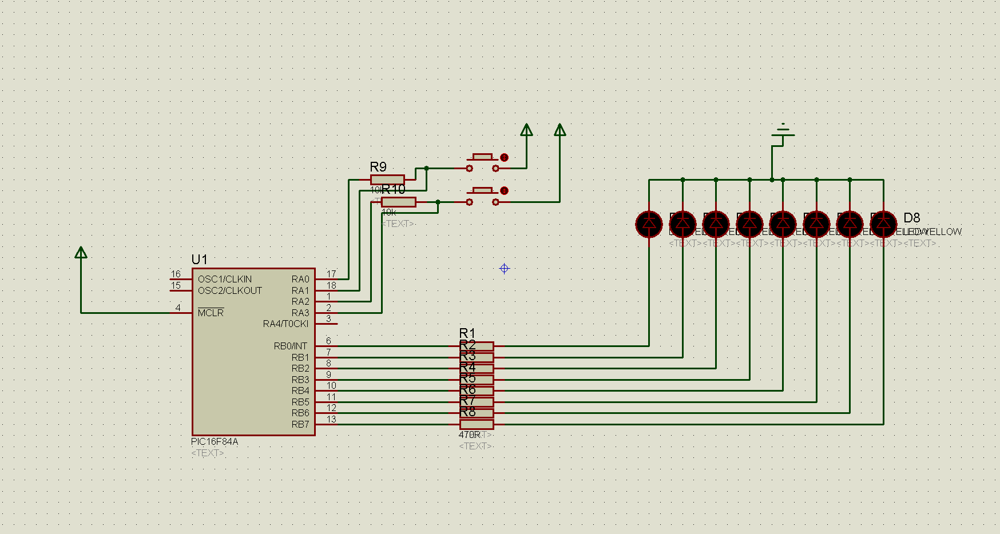

2ND PRELIM EXAM
program YOURNAME_2PE
mainloop:
trisb = 0
portb = 0
trisa = %11111111
portb = %00000000
if porta.0 = 1 then
goto switch1
else if porta.2 = 1 then
goto switch2
end if
goto mainloop
switch1:
portb = %11111111
delay_ms(200)
portb = %00000000
delay_ms(200)
if porta.0 = 0 then
goto mainloop
else if porta.0 = 1 then
goto switch1
else if porta.2 = 3 then
goto switch2
end if
goto mainloop
switch2:
portb=%00000001
delay_ms(200)
portb=%00000010
delay_ms(200)
portb=%00000100
delay_ms(200)
portb=%00001000
delay_ms(200)
portb=%00010000
delay_ms(200)
portb=%00100000
delay_ms(200)
portb=%01000000
delay_ms(200)
portb=%10000000
delay_ms(200)
if porta.0 = 0 then
goto mainloop
end if
goto switch2
end if
end if
end if
end.